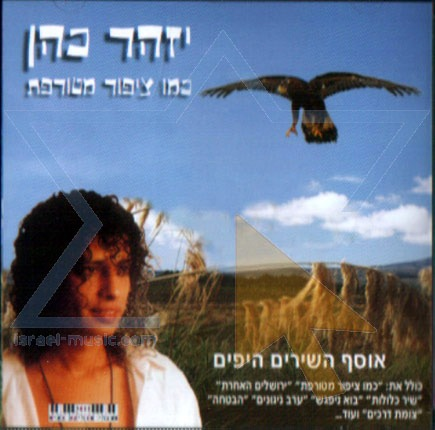
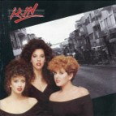
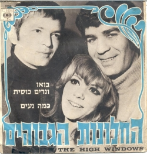

מוסיקה
פופ
שנות ה-70
לקראת סוף שנות ה-70 העולם זעק לפופ ולמוזיקת ריקודים, ובעקבות הסרט "שגעון המוזיקה", הדיסקו החל לתפוס תאוצה (הפסקול נכתב על ידי הרכב הבי ג'יז).
מוזיקת פופ - צברה פופולריות גוברת. להקת אבבא שהתפרסמה לאחר זכייתה באירוויזיון 1974, הפכה לאחת הלהקות המצליחות ביותר בכל הזמנים.
במהלך שנות ה-70 להקת הפופ-דיסקו האנגלית בי ג'יז הצליחה להביא את מספר הלהיטים הרב ביותר לצמרת מצעד הפזמונים המרכזי של תעשיית המוזיקה האמריקאית (9 שירים) וכמו כן הצליח להישאר במשך הזמן הרב ביותר בצמרת המצעד (27 שבועות).
שנות ה 2000
שנות ה 90
שנות ה 80
שנות ה 60


